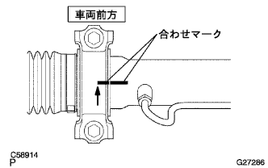
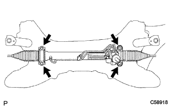
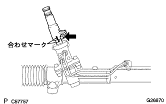
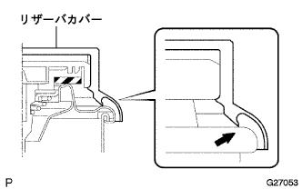

パワーステアリング リンクASSY 取り付け |
| 1. パワーステアリング リンクASSY取り付け |
|  |
グロメットNo.2をステアリングリンクASSYに取り付ける。
合わせマークを合わせて、ブラケットNo.2をステアリングリンクASSYに取り付ける。
|  |
ボルトおよびナット各4個で、ステアリングリンクASSYおよびブラケットNo.2をクロスメンバに仮付けする。
取り付けボルト4本を本締めする。
| 2. ステアリングインタミディエイト シャフト取り付け |
|  |
合わせマークを合わせて、ボルトでインタミデイエイトシヤフトをコントロールバルブに取り付ける。
| 3. ステアリングコラムホール カバーSUB-ASSY NO.1取り付け |
 |
ホールカバーNo.1の切り欠きを、コントロールバルブハウジングの突起に合わせて取り付ける。
| 4. パワーステアリングラックハウジングヒート インシュレータ取り付け |
ヒートインシユレータの穴をホールカバーNo.1の突起に合わせる。
ボルトで、ヒートインシユレータを取り付ける。
| 5. フロントサスペンション クロスメンバSUB-ASSY取り付け |
 |
ミッションジャッキで、クロスメンバを支える。
ボルト4本で、クロスメンバをボデーに仮付けする。
SSTをクロスメンバRH側および車両RH側の基準穴に差し込み、ボルト穴位置を調整しながらボルト2本を仮締めする。
 |
SSTをクロスメンバLH側および車両LH側の基準穴に差し込み、ボルト穴位置を調整しながらボルト2本を仮締めする。
SSTをクロスメンバRH側および車両RH側の基準穴に差し込み、規定トルクで締め付ける。
SSTをクロスメンバLH側および車両ＬＨ側の基準穴に差し込み、規定トルクで締め付ける。
ミッションジャッキをクロスメンバから取りはずす。
 |
ボルトおよびナット2個で、エンジンマウンテイングインシユレータRRをクロスメンバに取り付ける。
スリングデバイスおよびチェーンブロックを取りはずす。
| 6. プレッシャフィード チューブASSY取り付け |
 |
プレツシヤフイードチユーブASSYをステアリングリンクASSYに仮付けする。
ボルトで、プレツシヤフイードチユーブASSYのクランプをクロスメンバに取り付ける。
 |
ユニオンナットレンチ17を使用して、プレツシヤフイードチユーブASSYを本締めする。
| 7. エキゾーストパイプASSY FR取り付け |
ノギスを使用して、コンプレッションスプリングの自由長を測定する。
 |
新品のガスケットを木片およびハンマーを使用して、エキゾーストマニホールドの面一まで徐々に打ち込む。
エキゾーストマニホルドにエキゾーストフロントパイプASSYを取り付ける。
| 8. フロントドライブ シャフトASSY LH取り付け |
インボードジョイントASSY LHのスプライン部にオートフルードタイプT-IVを塗布する。
 |
シャフトのスプラインをかん合させ、ブラスバーおよびハンマーを使用して、ドライブシャフトASSY LHを挿入する。
| 9. フロントドライブ シャフトASSY RH取り付け |
| 10. フロントアクスルASSY LH取り付け |
フロントアクスルASSYを車両外側に押して、アクスルASSYにドライブシャフトASSYのスプラインをかん合させ、挿入する。
| 11. フロントアクスルASSY RH取り付け |
| 12. タイロッド エンドSUB-ASSY LH取り付け |
タイロッドエンドをステアリングナックルに取り付け、キャッスルナットで締め付ける。
新品のコッターピンを取り付ける。
| 13. タイロッド エンドSUB-ASSY RH取り付け |
| 14. フロントサスペンションロワーアームNo.1 LH取り付け |
ロワーアームASSYのステアリングナックルに取り付け、キャッスルナットで締め付ける。
新品のクリップを取り付ける。
| 15. フロントサスペンションロワーアームNo.1 RH取り付け |
| 16. スタビライザ バー FR取り付け |
クッションリテーナNo.1を2個、クッション2個およびスタビライザバーを図の向きになる様に取り付け、ナットで締め付ける。
 |
スタビライザボルトをスパナ(10mm)で固定し、新品のナットを締め付ける。
| 17. スピード センサ FR LH取り付け |
ボルトで、スピードセンサワイヤおよびフレキシブルホースをショックアブソーバASSYに取り付ける。
 |
クリツプをショックアブソーバASSYに取り付ける。
 |
ボルトで、スピードセンサＦＲをステアリングナックルに取り付ける。
| 18. スピード センサ FR RH取り付け |
| 19. フロントアクスル シャフト ナット LH取り付け |
ソケツトレンチ(30mm)を使用して、新品のハブナットを取り付ける。
 |
タガネおよびハンマーを使用して、ナットをかしめる。
| 20. フロントアクスル シャフト ナット RH取り付け |
| 21. エンジンアンダ カバー RH取り付け |
スクリュー2個およびボルト2本で、エンジンアンダーカバーRHを取り付ける。
ナットを、締め付ける。
| 22. エンジンアンダ カバー LH取り付け |
スクリュー2個およびボルト2本で、エンジンアンダーカバーLHを取り付ける。
| 23. フロントタイヤ取り付け |
| 24. ステアリングスライディング ヨークSUB-ASSY接続 |
合わせマークを合わせて、ボルトでスライデイングヨークを接続する。
ボルト2本で、スライデイングヨークを固定する。
| 25. フロントタイヤ直進状態点検 |
| 26. ステアリングコラムホール カバーSUB-ASSY NO.1取り付け |
クリップAを付け、ホールカバーNo.1およびクリップＢをボデーに取り付ける。
| 27. ステアリングコラムホールカバー プレート取り付け |
 |
クリップ2個でステアリング コラム ホールカバープレートを取り付ける。
| 28. パワーステアリングフルード補充 |
| 29. パワーステアリングフルードエア抜き |
車両をリフトアップする。
エンジン停止状態で、ステアリングホイールのロック ツゥ ロックをゆっくり数回行う。
車両をリフトダウンする。
アクセルペダルを踏まずにエンジンを始動して数分放置する。
エンジン回転数1000r/min以下で、ステアリングホイールのロック ツゥ ロックを数回繰り返す。
エンジン回転数1000r/min以下で、ステアリングホイールの据え切り保持(ステアリングホイールをいっぱいに切った状態で5-6秒保持)を、2-3秒間隔で数回繰り返す。
オイルリザーバの泡立ちおよび白濁が消えるまでエンジンを停止して放置した後、再びエンジンを始動しアイドリング回転でのロック ツゥ ロックや据え切り保持を行っても泡立ちおよび白濁がないことを確認する。
オイルリザーバフルードレベル点検を行う。
| 30. フルード量点検 |
車両を水平にする。
エンジン回転数が1000r/min以下で、ステアリングホイールのロック ツゥ ロックを繰り返し、フルードの油温を上げる。
リザーバキヤツプをオイルリザーバから取りはずす。
オイルリザーバの口から、フルードの泡立ちおよび白濁がないことを確認する。
エンジン回転時と停止時の、フルードレベルの差を測定する。基準値外の場合は、エア抜きを行う。エア抜きで効果が出ない場合は、油圧系統のフルード漏れを点検する。
 |
フルードレベルが基準内にあることを点検する。基準より少ない場合は、基準範囲内の上限になるように、パワーステアリングフルードを補充する。
|  |
リザーバキヤツプおよびリザーバカバーを取り付ける。
| 31. フルード漏れ点検 |
図の場所からフルードが漏れていないか点検する。
| 32. 排気ガス漏れ点検 |
| 33. フロントホイールアライメント点検·調整 |
参照